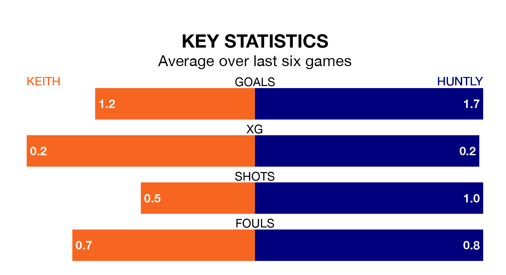

Huntly travel to Keith on Saturday in the Highland Football League.
The visitors come into the game on the back of a win in their last match, having beaten Brora Rangers 1-0 at home.
Keith also won their last match, 2-1 against Inverurie Loco Works.
With 80 goals in 31 games so far this season, Huntly are the league's joint-second-highest scorers with 2.6 goals per game. But they are conceding more than average too, letting in 58 goals at a rate of 1.9 per game.
Keith, meanwhile, are below average scorers, with 1.1 goals per game, compared to a league average of 1.8. They have conceded 1.8 goals per game.
In the last 10 years, Keith and Huntly have played each other on 13 occasions. Keith won three of them, Huntly six, and they drew four times.
On average, Keith scored 1.7 goals and Huntly 2.0 in those matches.
Their last meeting was on March 20, when they played out a 1-1 draw.
The hosts are 13th in the table after 28 games, of which they have won seven and drawn six, earning 27 points.
The away team are seven places ahead of Keith in sixth, with 16 wins and five draws putting them on 53 points.
Keith are in reasonable form in the Highland Football League, with three wins and two draws from their last six games.
And also with three wins and two draws over that period, Huntly's form is identical – they have both taken 11 points from 18.
Updated: 12:39 (UTC), 26/03/24